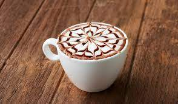

Espresso bazlı kahveler, espresso üzerine su ve süt gibi çeşitli eklemeler yapılarak zenginleştirilen kahve türlerine denir. En popüler örnekleri latte, americano, macchiato ve cappuccinodur. Genellikle espressonun sert tadını yumuşatmak için tercih edilirler.
Espresso bazlı kahvelerin özelliklerine ve yapılış biçimlerine dair tüm detayları yazının devamında inceleyebilirsiniz!
Espresso Nedir?
İlk olarak bahsedeceğimiz tüm bu kahve çeşitlerinin temelindeki espressoyu tanımamız gerekiyor.
Espresso, basınç gücünden yararlanılarak demlenen sert ve yoğun bir kahve türüdür. Çok ince öğütülen kahve, 95 derecedeki sıcak suyun 25 saniye içerisinde basınçlı şekilde kahve tanelerinin içerisinden fincana aktarılmasıyla elde edilir. İtalya’da ortaya çıkmıştır ve tüm espresso bazlı kahve çeşitlerinin özünü oluşturur.
Americano Neydi?
Americano, 150 ml sıcak su üzerine bir shot (30 ml) espresso eklenerek yapılan bir kahve türüdür. 180 ml’lik fincanda servis edilir. Espressoya göre daha yumuşak, filtre kahveye göre daha sert bir aromaya sahiptir. İkinci dünya savaşı sırasında espressoyu çok sert bulan Amerikan askerleri tarafından keşfedilmiştir.
Peki Americano Nasıl Yapılıyor?
Kahve fincanı sıcak su ile ısıtılır.
Fincana 150 ml sıcak su eklenir.
Suyun üzerine isteğe göre bir veya iki shot espresso eklenir.
Americano hazır, kreması dağılmadan servis edilmelidir.
Latte Nedir?
Latte, bir shot espresso üzerine kremalaştırılmış sıcak süt eklenmesiyle elde edilen kahve çeşididir. Latte kelimesi İtalyanca’da süt anlamına gelir. 180 ml’lik fincanda veya karton bardakta servis edilen lattenin ince bir kremaya sahip olması gerekir. Latte art ismi verilen süsleme yöntemiyle kahve üzerine kalp, kuğu gibi figürler çizilir.
Latte Nasıl Yapılıyor?
Oval kahve fincanına bir shot espresso eklenir.
Yağlı süt, buhar çubuğu yardımıyla krema kıvamına gelene kadar ısıtılır.
Espressonun üzerine krema kıvamındaki sıcak süt eklenir.
Art yapılarak süslenen latte sunuma hazır!
Cappucino Nedir?
Cappuccino, bir shot espresso üzerine köpürtülmüş sıcak süt eklenerek yapılan kahve türüdür. Latteden farkı sütünün çok daha köpüklü olmasıdır. Porselen veya karton bardakta servis edilir. İsmini siyah elbise üzerine beyaz şapka takan Capuchin rahiplerinden aldığı söylenir. Kahve üzerindeki köpük katmanı, Capuchin rahiplerini andırır.
Cappuccino Nasıl Yapılıyor?
Cappuccino fincanına bir shot espresso eklenir.
Süt uygun sıcaklığa ulaşana kadar buhur çubuğuyla köpürtülür.
Espressonun üzerine krema kıvamındaki sıcak süt eklenir.
Kahvenin üzerine bol köpüklü süt eklenir.
Espresso Macchiato Nedir?
Espresso macchiato, espresso üzerine bir kaşık süt köpüğü eklenerek hazırlanan kahve türüdür. Küçük porsiyonlarda servis edilir. Süt değil, yalnızca süt köpüğü eklendiği için sert bir tadı vardır. Kahve üzerindeki ufak köpük beneği andırdığı için “benekli” anlamına gelen macchiato ismi verilmiştir.
Espresso Macchiato Nasıl Yapılıyor?
Küçük bir fincana bir shot espresso eklenir.
Tatlı kaşığı yardımıyla dolu bir kaşık süt köpüğü kahve üzerine yerleştirilir.
İtalyanların favorisi espresso macchiato hazır!
Mocha Nedir?
Cafe Mocha, espresso üzerine sıcak süt ve eritilmiş çikolata eklenerek hazırlanan tatlı bir kahve çeşididir. İki veya üç parça çikolatayla birlikte espresso, süt ve süt köpüğünden oluşur. Beyaz çikolatayla yapılan türüne white chocolate mocha ismi verilir. İsmini Yemen’in güneyinde yer alan Mocha bölgesinden alır.

Mocha Nasıl Yapılıyor?
Eritilmiş çikolata veya çikolata şurubu fincana eklenir.
Üzerine espresso eklenerek karıştırılır.
Krema kıvamındaki sıcak süt karışıma ilave edilir.
Mocha hazır! 180 ml’lik cam veya karton bardakta servis edilir.
Evet arkadaşlar bu yazımızda başlıca espresso bazlı kahvelerden ve nasıl yapıldıklarından bahsettik.